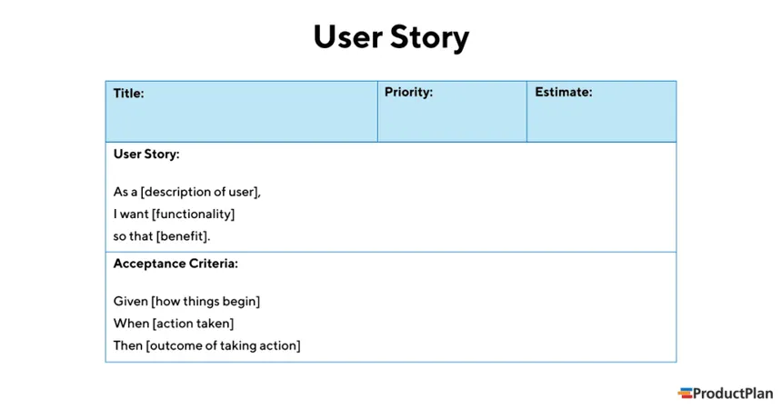

What is it?
A user story is a short, simple description of a feature told from the perspective of the person who desires the new capability, usually a user or customer of the system. User stories typically follow a simple template: As a <type of user>, I want <some goal> so that <some reason>.
Where is it used?
Pros and Cons
| Pros | Cons |
|---|---|
| Stories keep the focus on the user | Less focus on non-functional requirements |
| Stories enable collaboration | Difficult to scale for larger and more complex projects |
| Stories drive creative solutions | Produce vague or incomplete requirements |
| Stories create momentum | May leave out a lot of details, relying on conversations |
| User stories are relatively easy to estimate and prioritize | Can be time-consuming due to reliance on collaboration |